---
{
"layout": "note",
"title": "CH5 Elasticity - part8 (Plain Stress)",
"journal": true,
"section": "Study",
"topic": "Solid Mechanics",
"excerpt": "Plain strain을 지난시간에 살펴보았고, 이번에는 Plain stress를 살펴보자. 이번에는 3번 방향으로 stress 가 존재하지 않는다는 가정이다. 바로, Constitutive Law on Strain tensor ba",
"classes": "wide",
"permalink": "/blog/mechanical-engineering/solid-mechanics/ch5-elasticity-part8-plain-stress/",
"study_area": "Mechanical",
"date": "2025-06-11",
"source_url": "https://jeffdissel.tistory.com/208",
"header": {
"teaser": "/blog/mechanical-engineering/solid-mechanics/ch5-elasticity-part8-plain-stress/images/img-001.png"
}
}
---
{% raw %}Plain strain을 지난시간에 살펴보았고,
이번에는 Plain stress를 살펴보자.
이번에는 3번 방향으로 stress 가 존재하지 않는다는 가정이다.
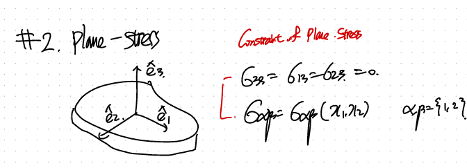
바로, Constitutive Law on Strain tensor based부터 살펴보자.
(sigma_kk = sigma 11 + sigma 22 임을 알 수 잇다. 33은 0 이니.)
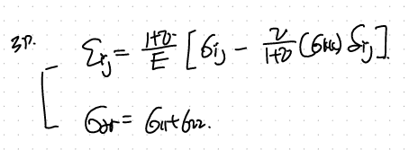
따라서, stress항의 33term을 제거하면, 2D index로 밑처럼 식을 바꾸어 주자.
그전에 위의 i,j식에 3,3,을 대입해주면 33방향의 strain component를 구할 수 있다.
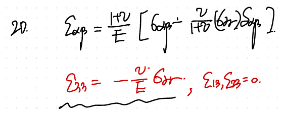
마찬가지로, 33방향의 stress = 0 일때 strain은 존재한다.
그리고 그 strain값은 11,22방향의 stress값에 따라 결정된다.
재밌는 사실은 Plain strain을 다시 remind해보면,
33방향의 strain = 0 으로 구속한 상황에서 stress가 11,22로 결정되었다.
(이번에 다룰 plain stress와 동일하다, 비율은 다르지만)
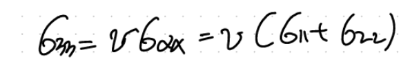
아무튼 beta -> alpha를 대입해주면.
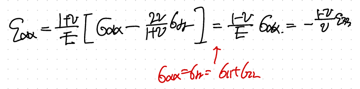
자 이제 방금 구한 식을 가지고 sigma based constitutive law에 대입해주자.
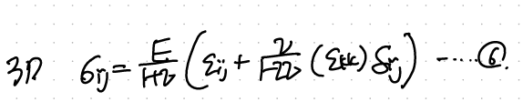
3D isotropic linear elastic Constitutive Law.
10초전에 구한 식을 이용하면,
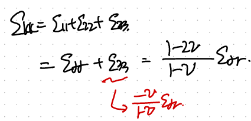
이제 e_kk를 6에 대입해주자.
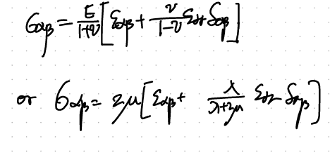
자 최종적으로, Plain stress에서 stress, strain tensor식을 유도하였다.
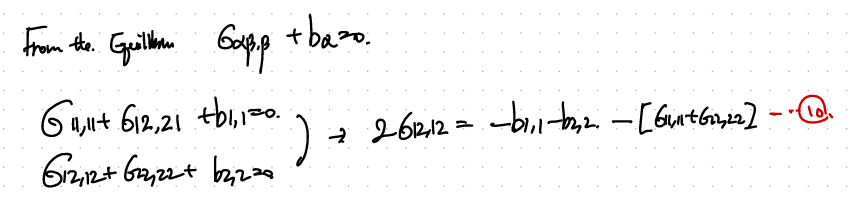
이번에도, Compatability Relationship을 사용하자.
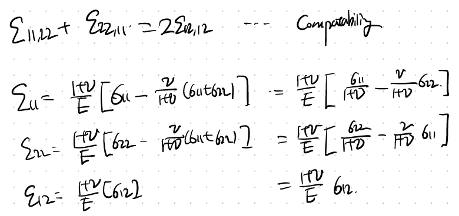
3개다 대입해주면, 11번식이 도출된다.
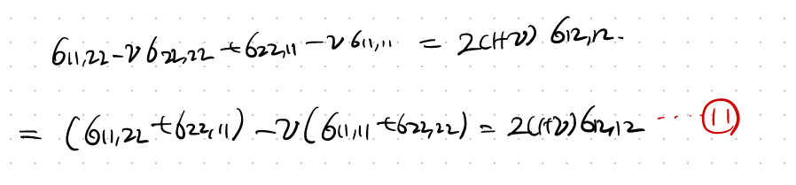
이제, 10,11 두식을 연립해주면 다음과 같이 최종 relationship이 도출된다!.
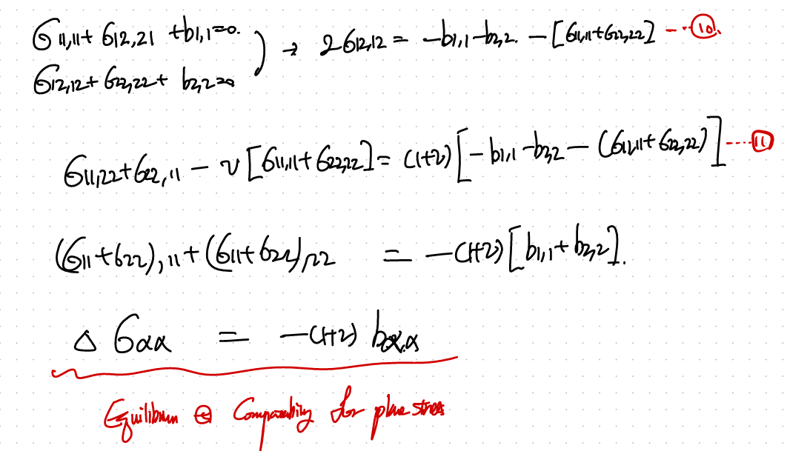
{% endraw %}